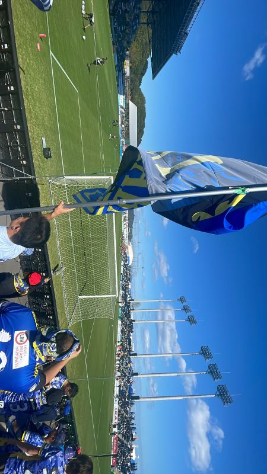

J2昇格、そしてその先へ。
進化を続けるFC今治の「今」を、どこよりも熱く、詳しく記録するために開設しました。公式記録だけでは見えてこない、ピッチ上の細かな戦術や里山スタジアムの熱気を、一サポーターの視点から言語化します。全試合のスタメン推移や結果を集約し、ファン同士が次戦の勝利を信じて熱く語り合えるデジタル・ホームタウンを目指します。
目次（ページ内リンク）
最新のレポート・更新情報
- MySiteをアップデート！ 試合総括・スタメンページに公式戦のチーム成績（表形式データ） を追加しました。
- 里山スタジアム新作イベント紹介を公開しました。
- 今週の試合総括・スタメン（第13節）を更新しました。
- FC今治・戦術と歴史のライブラリに「岡田メソッドの変遷」を追加しました。